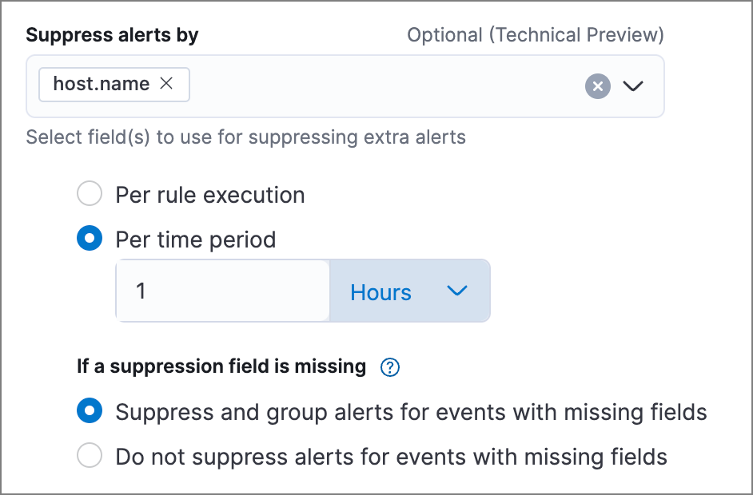
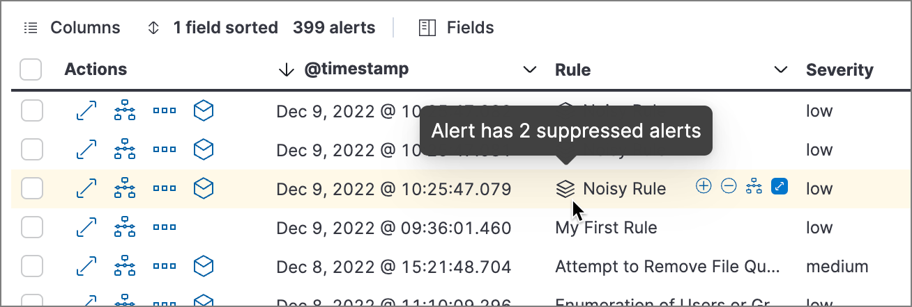
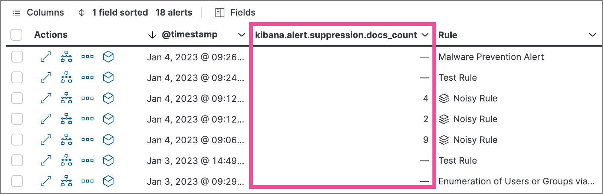
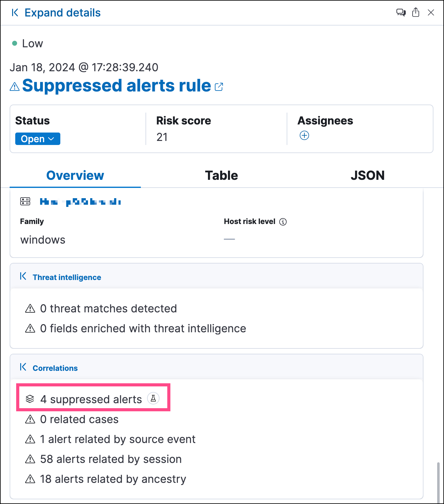
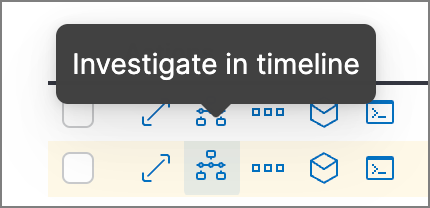

Suppress detection alertsedit
Alert suppression allows you to reduce the number of repeated or duplicate detection alerts created by these detection rule types:
- Custom query
- Threshold
- Indicator match
- Event correlation (non-sequence queries only)
- New terms
Normally, when a rule meets its criteria repeatedly, it creates multiple alerts, one for each time the rule’s criteria are met. When alert suppression is configured, duplicate qualifying events are grouped, and only one alert is created for each group. Depending on the rule type, you can configure alert suppression to create alerts each time the rule runs, or once within a specified time window. You can also specify multiple fields to group events by unique combinations of values.
The Elastic Security app displays several indicators in the Alerts table and the alert details flyout when a detection alert is created with alert suppression enabled. You can view the original events associated with suppressed alerts by investigating the alert in Timeline.
Alert suppression is not available for Elastic prebuilt rules. However, if you want to suppress alerts for a prebuilt rule, you can duplicate it, then configure alert suppression on the duplicated rule.
Configure alert suppressionedit
You can configure alert suppression when you create or edit a supported rule type. Refer to documentation for creating custom query, threshold, event correlation, or new terms rules for detailed instructions.
-
When configuring the rule type (the Define rule step for a new rule, or the Definition tab for an existing rule), specify how you want to group events for alert suppression:
- Custom query rule: In Suppress alerts by, enter 1-3 field names to group events by the fields' values.
- Threshold rule: In Group by, enter up to 3 field names to group events by the fields' values, or leave the setting empty to group all qualifying events together.
- Indicator match rule: In Suppress alerts by, enter 1-3 field names to group events by the fields' values.
- Event correlation rule (non-sequence queries only): In Suppress alerts by, enter 1-3 field names to group events by the fields' values.
- New terms rule: In Suppress alerts by, enter 1-3 field names to group events by the fields' values.
If you specify a field with multiple values, alerts with that field are handled as follows:
-
Custom query or threshold rules - A group of alerts is created for each value. For example, if you suppress alerts by
destination.ipof[127.0.0.1, 127.0.0.2, 127.0.0.3], alerts will be suppressed separately for each value of127.0.0.1,127.0.0.2, and127.0.0.3. -
Indicator match rule, event correlation (non-sequence queries only), or new terms rule - Alerts with the specified field name and identical array values are grouped together. For example, if you suppress alerts by
destination.ipof[127.0.0.1, 127.0.0.2, 127.0.0.3], alerts with the entire array are grouped and only one alert is created for the group.
-
If available, select how often to create alerts for duplicate events:
Both options are available for custom query, indicator match, event correlation, and new terms rules. Threshold rules only have the Per time period option.
- Per rule execution: Create an alert each time the rule runs and meets its criteria.
-
Per time period: Create one alert for all qualifying events that occur within a specified time window, beginning from when an event first meets the rule criteria and creates the alert.
For example, if a rule runs every 5 minutes but you don’t need alerts that frequently, you can set the suppression time period to a longer time, such as 1 hour. If the rule meets its criteria, it creates an alert at that time, and for the next hour, it’ll suppress any subsequent qualifying events.

-
Under If a suppression field is missing, choose how to handle events with missing suppression fields (events in which one or more of the Suppress alerts by fields don’t exist):
These options are not available for threshold rules.
-
Suppress and group alerts for events with missing fields: Create one alert for each group of events with missing fields. Missing fields get a
nullvalue, which is used to group and suppress alerts. - Do not suppress alerts for events with missing fields: Create a separate alert for each matching event. This basically falls back to normal alert creation for events with missing suppression fields.
-
Suppress and group alerts for events with missing fields: Create one alert for each group of events with missing fields. Missing fields get a
- Configure other rule settings, then save and enable the rule.
- Use the Rule preview before saving the rule to visualize how alert suppression will affect the alerts created, based on historical data.
- If a rule times out while suppression is turned on, try shortening the rule’s look-back time or turn off suppression to improve the rule’s performance.
Confirm suppressed alertsedit
The Elastic Security app displays several indicators of whether a detection alert was created with alert suppression enabled, and how many duplicate alerts were suppressed.
-
Alerts table — Icon in the Rule column. Hover to display the number of suppressed alerts:
 -
Alerts table — Column for suppressed alerts count. Select Fields to open the fields browser, then add
kibana.alert.suppression.docs_countto the table. -
Alert details flyout — Insights → Correlations section:

Investigate events for suppressed alertsedit
With alert suppression, detection alerts aren’t created for the grouped source events, but you can still retrieve the events for further analysis or investigation. Do one of the following to open Timeline with the original events associated with both the created alert and the suppressed alerts:
-
Alerts table — Select Investigate in timeline in the Actions column.
 - Alert details flyout — Select Take action → Investigate in timeline.
Alert suppression limit by rule typeedit
Some rule types have a maximum number of alerts that can be suppressed (custom query rules don’t have a suppression limit):
-
Threshold and event correlation (non-sequence queries only) - The maximum number of alerts is the value you choose for the
max_signalssetting, which is100by default. -
Indicator match and new terms - The maximum number is five times the value you choose for the
max_signalssetting. The defaultmax_signalsvalue is100, which means the default maximum limit for indicator match rules and new term rules is500.